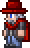
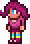
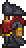

npcs:
|
guia 
|
o npc inicial, da dicas para continuar o jogo e explica os craft dos itens
|
Mercador 
|
para conseguilo e necessario que todos os jogadores do mundo tenham mais de 50 moedas de prata, ele vende itens importantes
como poções de vida e mana, flechas,tochas,etc.
|
enfermeira 
|
adquirido quando pelo menos um jogador do mundo usou um cristal de vida e adquiriu mais de 100 de vida.
ela recupera toda a vida do jogador por moedas, quanto menos vida mais caro a recuperaçao
|
vendedor de armas  ''
''
|
adquirido apos um jogador do mundo ter uma arma de fogo no inventario.
vende armas e muniçoes
|
driade 
|
adquirida apos derrotar o boss do bioma
maligno
ou o olho do cutlhu
ela vende plantas,sementes,pó purificador,etc
|
inventor goblin 
|
e adquirido, apos derrotar a invasão goblin em algum lugar do subterraneo.
vende a mesa do inventor, as botas foguetes, etc
|
pescador 
|
e adquirido apos acordar ele em alguma praia do jogo.
nao vende nada mas da missões que quando completas dao itens
|
demolista 
|
adquirido quando pelo menos um dos jogadores do mundo tiver uma bomba ou dinamite.
vende bombas,dinamites e granadas.
|
mecanica
|
e adquirida no fundo da dungeon.
vende, cabos,armadilhas,etc
|
vendedor de tinta 
|
e adquirido apos um jogador do mundo pegar um iten utilizado para fazer tinta.
vende tintas
|
costureiro 
|
adquirido apos derrotar o skeletron.
vende roupas
|
comerciante viajante 
|
aparece aleatoriamente na sua cidade.
vende itens aleatorios
|
zoologista 
|
aparece apos completar 10% do bestiario.
vende gancho,chicote,pets,e montarias.
|
golfer 
|
aparece dentro das cavernas do deserto.
vende itens de golf como: bolas,tacos,buracos, etc
|
pintor 
|
adquirido quando tiver 8 npcs no mundo.
vende tintas e quadros
|
taberneiro 
|
adquirido apos derrotar o boss do bioma maligno.
vende o portal e o cristal de ethernia.
|
estilista
|
encontrada amarrada no bioma de aranha.
corta o cabelo, e muda de roupa
|
garota da festa 
|
tem 2.5% de chance de aparecer a cada manha.
vende itens ed festa como bexigas, confetes, etc
|
HARDMODE: |
steampunker 
|
adquirida apos derrotar os bosses mecanicos.
vende itens tecnologicos, o limpimador, e essencias
|
bruxo 
|
e encontrado em qualquer caverna apos o hardmode.
vende poçoes,tomos,etc
|
ciborgue
|
chega a sua cidade apos derrotar a plantera.
vende blocos invisiveis e foguetes.
|
pirata 
|
encontrado apos derrotar a invasão pirata.
|
trufa 
|
encontrado apos fazer uma casa em um bioma de cogumelo na superficie.
vende o auto martelo, e itens de cogumelo.
|
coletor de taxa
|
encontrado apos purificalo no inferno.
cobra taxa dos moradores e te da dinheiro
|
princesa 
|
encontrada, apos todos os npcs chegarem na sua cidade
|